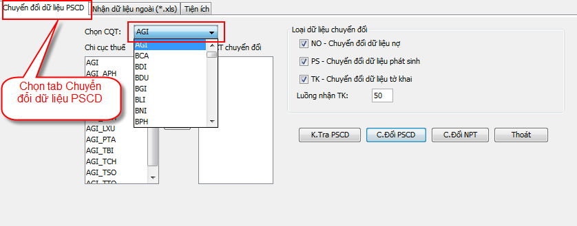
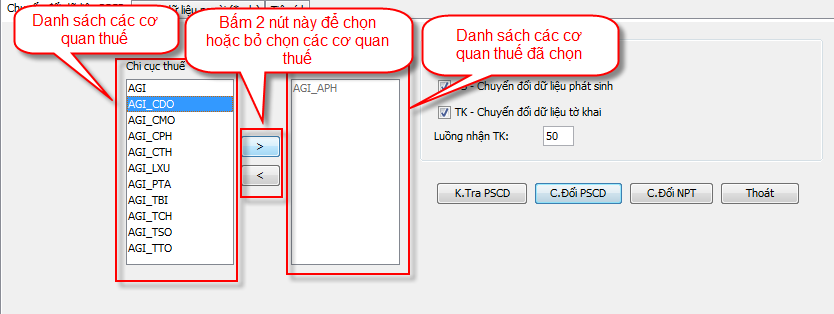

Bước 1: Chọn cơ quan thuế cần chuyển đổi dữ liệu
-
Chọn tab: Chuyển đổi dữ liệu PSCD, sau đó nháy chuột vào thanh combo box Chọn cqt và chọn tỉnh để chuyển đổi dữ liệu. Danh sách các cơ quan thuế của tỉnh đó sẽ hiện thị trong danh sách Chi cục thuế.
 -
Lựa chọn các cơ quan thuế cần chuyển đổi trong danh sách Chi cục thuế, sau đó bấm vào nút
 để thêm cơ quan thuế đó vào danh sách DS CCT chuyển
đổi. Tương tự để xóa một cơ quan thuế ra khỏi danh
sách DS CCT chuyển đổi thì bạn chọn cơ quan thuế
cần xóa trong danh sách DS CCT chuyển đổi sau đó
bấm vào nút
để thêm cơ quan thuế đó vào danh sách DS CCT chuyển
đổi. Tương tự để xóa một cơ quan thuế ra khỏi danh
sách DS CCT chuyển đổi thì bạn chọn cơ quan thuế
cần xóa trong danh sách DS CCT chuyển đổi sau đó
bấm vào nút  .
.

Bước 2: Thực hiện chuyển đổi thông tin người phụ thuộc
- Xác định số luồng nhận dữ liệu.
- Bấm nút để thực hiện chuyển đổi thông tin người phụ thuộc vào hệ thống PITMS.